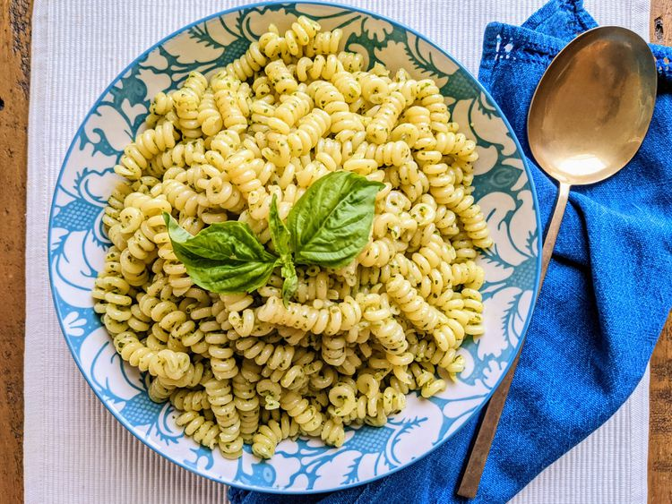

Pesto Pasta

Description
Pesto pasta is easy to make and full of flavor. It tastes good hot or cold!
This top-rated pesto pasta recipe, which comes together in just 15 minutes, is the perfect quick and easy weeknight dinner.
Ingredients
These are the ingredients you'll need to make this easy pesto pasta recipe:
- Pasta: Start with your favorite pasta shape
- Onion and oil: Cook the onion in olive oil until it's translucent
- Pesto: Use store-bought or homemade pesto sauce
- Seasonings: This pesto pasta is simply seasoned with salt and pepper
- Cheese: Grate your own Parmesan cheese instead of using the pre-shredded stuff
Steps
Here's a brief overview of what you can expect when you make this shortcut pesto pasta:
- Boil the pasta in salted water and drain
- Cook the onion in oil, then stir in the pesto and seasonings
- Add the pesto mixture to the hot pasta and toss with cheese
- Enjoy!